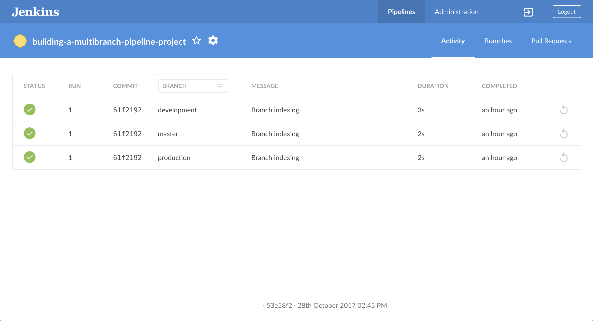
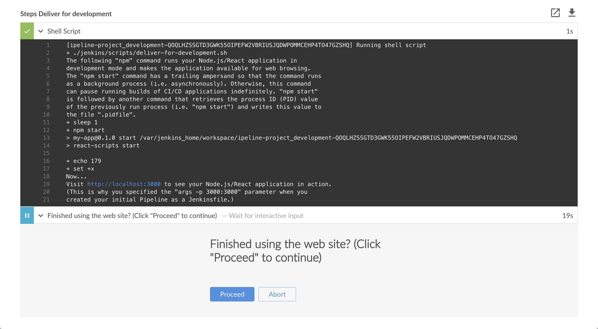

docker run \
--rm \
-u root \
-p 8080:8080 \
-v jenkins-data:/var/jenkins_home \ (1)
-v /var/run/docker.sock:/var/run/docker.sock \
-v "$HOME":/home \ (2)
jenkinsci/blueocean构建多分支流水线项目
Table of Contents
本教程向你展示如何使用Jenkins协调一个用 Node Package Manager (npm) 管理的简单 Node.js 和 React 项目， 并同时 为开发和产品环境交付不同的结果。
在开始本教程之前，建议你前往 教程概览 页面，并至少完成一个 介绍教程， 从而让你熟悉持续集成/持续交付概念（不同于你以往熟悉的技术栈）和这些概念在Jenkins中实现方式， 以及Jenkins流水线的基本知识。
本教程你将使用与 构建npm管理的Node.js和React应用 教程相同的应用。然而这一次，项目的交付会根据Jenkins构建不同的Git分支而有所区别。 也就是说，所构建的分支决定你的流水线会执行哪一个交付阶段。
耗时： 假如你的机器符合配置要求，完成本教程需要30-50分钟。 准确的耗时取决于你机器的性能， 以及你是否完成过在Docker中运行Jenkins教程，请参考另一个教程.
你可以在任何时候停止本教程，并从你离开的地方继续。
若你已经完成了另一个教程，可以跳过配置要求和在Docker中运行Jenkins章节， 继续阅读fork示例仓库（确保你本地安装了Git）。 如果你需要重启Jenkins，请参考停止和重启Jenkins.
配置要求
对于本教程，您将需要：
在 Docker中运行Jenkins
在本教程中, 将Jenkins作为 Docker 容器并从
jenkinsci/blueocean Docker
镜像中运行。
要在 Docker中运行Jenkins, 请遵循下面的macOS 和 Linux 或 Windows相关文档说明进行操作。 .
你可以在 Docker和 Installing Jenkins 页面的 Downloading and running Jenkins in Docker部分阅读更多有关Docker容器和镜像概念的信息。
在 macOS 和 Linux 系统上
-
打开终端窗口
-
使用下面的
docker run命令运行jenkinsci/blueocean镜像作为Docker中的一个容器(记住，如果本地没有镜像，这个命令会自动下载):1 将容器中的 /var/jenkins_home目录映射到 Docker volume ，并将其命名为jenkins-data。如果该卷不存在, 那么docker run命令会自动为你创建卷。2 将主机上的`$HOME` 目录 (即你的本地)映射到 (通常是 /Users/<your-username>目录) 到容器的/home目录。Note: 如果复制或粘贴上面的命令片段不起作用, 尝试复制和粘贴这个没有注释的版本:
docker run \ --rm \ -u root \ -p 8080:8080 \ -v jenkins-data:/var/jenkins_home \ -v /var/run/docker.sock:/var/run/docker.sock \ -v "$HOME":/home \ jenkinsci/blueocean -
继续 安装向导。
在 Windows 系统
-
打开命令提示窗口。
-
使用下面的
docker run命令运行jenkinsci/blueocean镜像作为Docker中的一个容器(记住，如果本地没有镜像，这个命令会自动下载):docker run ^ --rm ^ -u root ^ -p 8080:8080 ^ -v jenkins-data:/var/jenkins_home ^ -v /var/run/docker.sock:/var/run/docker.sock ^ -v "%HOMEPATH%":/home ^ jenkinsci/blueocean
对这些选项的解释, 请参考上面的 macOS 和 Linux 说明。
-
继续安装向导。
访问 Jenkins/Blue Ocean Docker 容器
如果你有一些使用 Docker 的经验，希望或需要使用
docker exec
命令通过一个终端/命令提示符来访问
Jenkins/Blue Ocean Docker 容器, 你可以添加如 --name jenkins-tutorials 选项(与上面的
docker run
), 这将会给Jenkins/Blue Ocean Docker容器一个名字
"jenkins-tutorials"。
这意味着你可以通过 docker exec 命令访问Jenkins/Blue Ocean 容器(通过一个单独的终端
/命令提示窗口) ，例如:
docker exec -it jenkins-tutorials bash
安装向导
在你访问 Jenkins之前, 你需要执行一些快速的 "一次性" 步骤。
解锁 Jenkins
当你第一次访问一个新的 Jenkins 实例时, 要求你使用自动生成的密码对其进行解锁。
-
当在终端/命令提示窗口出现两组星号时, 浏览
http://localhost:8080并等待 Unlock Jenkins 页面出现。
-
再次从终端/命令提示窗口, 复制自动生成的字母数字密码(在两组星号之间)。

-
在 Unlock Jenkins 页面, 粘贴该密码到 Administrator password 字段并点击 Continue。
使用插件自定义 Jenkins
在 解锁 Jenkins后, Customize Jenkins 页面出现。
在该页面，点击 Install suggested plugins。
安装向导显示了正在配置的Jenkins的进程，以及建议安装的插件。这个过程肯需要几分钟。
停止和重启 Jenkins
在本教程的其余部分, 你可以通过在终端/命令提示窗口输入 Ctrl-C`停止 Jenkins/Blue Ocean
Docker 容器，你可以从中运行<<run-jenkins-in-docker,上面>>的 `docker run ... 命令。
要重启Jenkins/Blue Ocean Docker 容器:
-
在上面的 macOS,Linux 或 Windows上运行相同的
docker run ...命令 。
Note: 如果有更新的话，该进程会更新jenkinsci/blueoceanDocker 镜像。 -
浏览`http://localhost:8080`。
-
等待直到登录页面出现并登陆。
Fork 和 clone GitHub示例仓库
通过将应用程序源代码所在的示例仓库fork到你自己的Github账号中， 并clone到本地， 你就可以获取一个"Welcome to React"简单Node.js和React应用程序。
-
请确保你登陆了你的GitHub账户。如果你还没有Github账户，你可以在 GitHub网站 免费注册一个账户。
-
将示例仓库
building-a-multibranch-pipeline-projectfork到你的账户的Github仓库中。在此过程中，如果你需要帮助， 请参考 Fork A Repo 文档。 -
将你的GitHub账户中的
simple-java-maven-app仓库clone到你的本地机器。 根据你的情况完成以下步骤之一(其中<your-username>是你的操作系统用户账户名称)：-
如果你的机器安装了Github Desktop：
-
在GitHub网站上，点击绿色的 Clone or download 按钮，再点击 Open in Desktop.
-
在Github桌面版中，在点击 Clone a Repository 对话框上的 Clone 按钮之前，确保 Local Path 的配置为：
-
macOS 系统配置为
/Users/<your-username>/Documents/GitHub/building-a-multibranch-pipeline-project -
Linux 系统配置为
/home/<your-username>/GitHub/building-a-multibranch-pipeline-project -
Windows 系统配置为
C:\Users\<your-username>\Documents\GitHub\building-a-multibranch-pipeline-project
-
-
-
其他情况:
-
打开一个终端/命令提示符，并且
cd进入正确的目录路径：-
macOS 系统路径为
/Users/<your-username>/Documents/GitHub/ -
Linux 系统路径为
/home/<your-username>/GitHub/ -
Windows 系统路径为
C:\Users\<your-username>\Documents\GitHub\（推荐使用Git bash命令行，而不是通常的Microsoft命令提示符）
-
-
运行以下命令完成仓库的clone：
git clone https://github.com/YOUR-GITHUB-ACCOUNT-NAME/building-a-multibranch-pipeline-project
其中YOUR-GITHUB-ACCOUNT-NAME是你的Github账户的名称。
-
-
在你的仓库中创建开发和生产分支
在Jenkins中创建流水线项目之前，在你的本地Git仓库中创建"development"和 "production"分支。
你将创建一个单独的Jenkinsfile（最初是在 master 分支，但最终其上的代码会复制到其他分支），
该Jenkinsfile的各个阶段会根据Jenkins所构建的分支不同而被选择性的执行。
在 building-a-multibranch-pipeline-project 目录路径下（即你的本地clone仓库）
-
运行以下命令来创建以上分支（从
master分支的内容复制）：-
git branch development
以及 -
git branch production
-
-
检查这些分支被成功创建，运行命令
git branch，结果为：development * master production -
如果符号*（标识当前分支）未处于
master的位置，运行命令git checkout master以确保master是当前分支。
在Blue Ocean中创建你的流水线项目
当你在Blue Ocean中创建 any 流水线项目是 , Jenkins 实际上在后台创建了一个多分支管道项目 。 如果你在Blue Ocean创建了一个流水线项目后，访问 Jenkins的经典界面; 你会看到Jenkins 将你的项目创建为一个 "多分支流水线" 项目。
-
回到Jenkins并进入 Blue Ocean 界面。 要做到这点, 确保:
-
浏览
http://localhost:8080/blue并登陆+ 或 -
浏览
http://localhost:8080/, 登录后点击右侧的 Open Blue Ocean 。
-
-
在Blue Ocean界面中心的 Welcome to Jenkins 框, 点击 Create a new Pipeline 开始流水线构建向导。
Note: 如果你没有看到这个框, 点击右上方的 New Pipeline。 -
在 Where do you store your code?,点击 Git (not GitHub).
-
在*Repository URL* 域 (在 *Connect to a Git repository*里), 指定你aboveclone到本地的仓库的目录路径, 他来自你主机上的 用户账号/主目录 , 映射到Jenkins容器的
/homed目录 - 即-
macOS -
/home/Documents/GitHub/building-a-multibranch-pipeline-project -
Linux -
/home/GitHub/building-a-multibranch-pipeline-project -
Windows -
/home/Documents/GitHub/building-a-multibranch-pipeline-project
-
-
点击k Save 保存你新建的流水线项目。
Blue Ocean 在每个分支中检测Jenkinsfile"流水线存根" 的存在并运行每条流水线以对抗其各自的分支, 它的构建结果显示在Blue Ocean主界面的 Activity 页面上。+
|
为什么 如果你在Blue Ocean中构建了一个流水线项目，但在你的仓库的一个或多个分支上没有一个 Jenkinsfile, 随后添加`Jenkinsfile` 到这些分支中,然后在Blue Ocean中访问这些分支 任一个:
|
将你的带有build 和 test 阶段的初始流水线创建为Jenkinsfile
现在，你已经准备好在Jenkins中创建你的能够自动构建 Node.js
和React 应用程序的流水。 你的流水线将被创建为
Jenkinsfile, 它会提交你本地的Git仓库(building-a-multibranch-pipeline-project)的 master 分支 。
首先, 创建一个初始流水线来下载 Node Docker 镜像并将它作为Docket容器运行，它会构建简单的Node.js 和 React 应用程序。还会添加 "Build" 阶段到流水线，开始编排整个过程和"Test" 阶段 ，检查应用程序呈现的结果是否令人满意。
-
使用你最称手的文本编辑器或 IDE, 在本地
building-a-multibranch-pipeline-projectGit 仓库的根目录下打开现有的Jenkinsfile并 clear 它的内容。
Note: 确保在你的仓库的`master` 分支上执行了该步骤。 -
复制并粘贴下面的声明式流水线代码到空的 `Jenkinsfile`文件中:
pipeline { agent { docker { image 'node:6-alpine' args '-p 3000:3000 -p 5000:5000' (1) } } environment { CI = 'true' } stages { stage('Build') { steps { sh 'npm install' } } stage('Test') { steps { sh './jenkins/scripts/test.sh' } } } }1 args使 Node 容器 (临时的) 可以通过 3000 和 5000端口进行访问。它的意义在于解释了你clone的仓库的jenkins/scripts/deliver-for-deployment.sh和jenkins/scripts/deploy-for-production.sh文件, 这将在本教程的后续部分中介绍。Note: 对 `Jenkinsfile`中其他组件的解释, 请参考使用npm构建Node.js和React应用教程的“Create your initial Pipeline…” 和 “Add a test stage…”章节的声明式流水线的注解。 .
-
保存并提交你编辑的
Jenkinsfile文件到本地的building-a-multibranch-pipeline-projectGit 仓库。 比如在building-a-multibranch-pipeline-project目录下, 运行下面的命令:
git stage .
然后
git commit -m "Add initial Jenkinsfile with 'Test' stage" -
再次回到Jenkins, 必要的话再次登录并进入 Jenkins的Blue Ocean的界面。
-
点击右上方的 Branches 进入你的流水线项目的分支列表。

-
点击你的流水线项目的
master分支的运行图标 , 然后快速的点击出现在右下方的 OPEN
链接来查看Jenkins 使用改进后的
, 然后快速的点击出现在右下方的 OPEN
链接来查看Jenkins 使用改进后的 Jenkinsfile`构建 `master分支。 如果你点击不了OPEN 链接, 点击Blue Ocean Activity 页面 的_top_ 行来使用这一特性。
在几分钟内, 如果Jenkins成功的从你的 `master`分支构建了 Node.js 和 React 应用程序，Blue Ocean界面就会变成绿色。
-
点击右上方的 X 回到Blue Ocean 界面的 Activity 页面。
给你的流水线添加deliver和 deploy 阶段
接下来, 添加 "交付开发" 和 "部署生产" 阶段到你的流水线,Jenkins将会根据Jenkins所在的分支选择性的执行。
这将 "流水线即代码" 概念提升到一个新的级别, 在这个级别中， 一个单一的
Jenkinsfile 文件描述了在Jenkins中你的仓库的每个分支的整个项目的构建, 测试, 交付和部署过程。 了解更多在用户手册的
流水线 和 使用Jenkinsfile章节。
-
回到你的文本编辑器/IDE，打开`Jenkinsfile` 文件。
-
立刻复制并粘贴下面的声明式流水线语法到`Jenkinsfile`文件的
Test阶段下面:stage('Deliver for development') { when { branch 'development' } steps { sh './jenkins/scripts/deliver-for-development.sh' input message: 'Finished using the web site? (Click "Proceed" to continue)' sh './jenkins/scripts/kill.sh' } } stage('Deploy for production') { when { branch 'production' } steps { sh './jenkins/scripts/deploy-for-production.sh' input message: 'Finished using the web site? (Click "Proceed" to continue)' sh './jenkins/scripts/kill.sh' } }结果如下:
pipeline { agent { docker { image 'node:6-alpine' args '-p 3000:3000 -p 5000:5000' } } environment { CI = 'true' } stages { stage('Build') { steps { sh 'npm install' } } stage('Test') { steps { sh './jenkins/scripts/test.sh' } } stage('Deliver for development') { when { branch 'development' (1) } steps { sh './jenkins/scripts/deliver-for-development.sh' input message: 'Finished using the web site? (Click "Proceed" to continue)' sh './jenkins/scripts/kill.sh' } } stage('Deploy for production') { when { branch 'production' (1) } steps { sh './jenkins/scripts/deploy-for-production.sh' input message: 'Finished using the web site? (Click "Proceed" to continue)' sh './jenkins/scripts/kill.sh' } } } }1 when指令 (和它们的`branch` 条件一起)决定是否stages(包括这些when指令) 会被执行。 如果branch条件的值(即模式) 与Jenkins运行构建的分支名匹配, 包含when和branch概念的`stage` 就会被执行。Notes:
-
对
input message过程的解释, 请参考“Add a final deliver stage…” section of the Build a Node.js and React app 教程的声明式流水线的注解 4。 -
对
deliver-for-development.sh,deploy-for-production.sh和kill.sh脚本步骤的解释,请参考位于`building-a-multibranch-pipeline-project` 仓库的根目录下的`jenkins/scripts` 目录下的这些文件的内容。
-
-
保存并提交你编辑的
Jenkinsfile到本地的building-a-multibranch-pipeline-projectGit 仓库。 比如在building-a-multibranch-pipeline-project目录, 运行命令:
git stage .
然后
git commit -m "Add 'Deliver...' and 'Deploy...' stages" -
再次回到Jenkins, 如果必要重新登录并进入Jenkins的Blue Ocean界面。
-
点击右上方的 Branches 来访问你的流水线项目的分支列表。
-
点击你的流水线项目的`master`分支的运行图标
,然后快速的点击出现在右下方的 OPEN
链接查看Jenkins使用改进过的 Jenkinsfile`构建 `master分支。I如果你点击不了 OPEN 链接, 点击Blue Ocean Activity 页面的 top 行来访问这一特性。
注意Jenkins是如何跳过你添加的最后两个阶段, 由于你正在运行构建的分支 (master) 在这些阶段不满足when指令的branch条件。
-
C点击右上方的 X 回到Blue Ocean界面的 Activity 页面。
Pull 更新的 Jenkinsfile 到其他的仓库分支中
现在你已经有一个完整的 Jenkinsfile 文件可以在Jenkins中构建你的应用, 你可以 pull 该文件从你本地仓库的 master 分支到它的 development 和 production 分支。
在你本地仓库的 building-a-multibranch-pipeline-project
目录下:
-
运行下面的命令来来pull从`master` 到 `development`的改变:
-
git checkout development
然后 -
git pull . master
-
-
还可以运行线面的命令将更改从
masterpull到production:-
git checkout production
然后 -
git pull . master
现在你的
development和production分支拥有你在master分支上对Jenkinsfile的所有修改。 -
在development分支上运行流水线
-
再次回到 Jenkins, 需要的话再次登录并进入 Jenkins的Blue Ocean界面。
-
点击右上的 Branches 进入流水线项目的分支列表。
-
点击流水线项目`development` 分支的运行图标
, 然后快速的点击出现在右下方的
OPEN 链接来查看Jenkins 使用改进后的 Jenkinsfile`构建 `development分支。 如果你点击不了 OPEN 链接, 点击Blue Ocean的 Activity 页面上的 top 行来访问这一特性。 -
在几分钟，当构建停止时, 确保你正在查看 Deliver for development 阶段 (如果需要点击它), 然后点击顶部绿色的*Shell Script* 步骤来扩展它的内容 并向下滚动直到你看见
http://localhost:3000链接。Deliver for development stage opened" width="100%">
Note: 由于你正在不同的分支上构建应用程序,npm install步骤需要几分钟为`npm`下载运行Node.js 和 React 应用所需的一些依赖 (保存在Jenkins主目录的`node_modules` 目录下)。由于这次的Jenkins构建是你的流水线项目在development分支上的第一次运，并且每个分支都会在Jenkins的主目录中有他自己的工作区目录(包括他自己的`node_modules` 目录)，这些依赖被再次下载。 -
点击
http://localhost:3000链接查看Node.js 和 React 应用在开发模式下在一个新的web浏览器选项卡中运行 (使用npm start命令) 。 你应该会看到一个标题为 *Welcome to React*的页面/站点。 -
当你查看完页面/站点, 在Blue Ocean点击 Proceed 按钮完成流水线的执行。
如果Jenkins成功在`development` 分支上构建Node.js 和 React 应用程序，Blue Ocean界面就会变成绿色。注意 Deliver for development 阶段是如何被执行的 ，而*Deploy for production* 阶段却没有执行。
-
点击右上方的 X 回到Blue Ocean界面的*Activity* 页面。
在production分支上运行流水线
-
点击右上方的 Branches 来访问你的流水线项目的分支列表。
-
点击你的流水线项目的`production`分支的运行图标
, 然后快速的点击出现在右下方的
OPEN 链接查看Jenkins使用改进后的 Jenkinsfile`构建`production分支。如果 你不能点击 OPEN 链接, 点击Blue Ocean Activity 页面的 top 行来访问这一特性。 -
在几分钟内，当构建停止时， 确保你正在查看 Deploy for production 阶段 (如果必要点击它), 然后点击顶部绿色的*Shell Script* 步骤来扩展它的内容并向下滚动直到你看到`http://localhost:5000` 链接。

-
点击
http://localhost:5000链接在一个新的web浏览器选项卡中查看你的Node.js 和 React应用。他将会在生产模式下从你的源代码的生产构建开始运行(使用npm run build命令生产)。 同样的, 你会看到一个标题为*Welcome to React*的页面/站点 然而, 这一次, 该应用程序的内容是由 npmservemodule提供的，并且很可能会继续在你浏览器的后台运行。 -
当你查看完网页/站点, 在Blue Ocean中点击 Proceed 按钮 完成流水线的执行。
如果Jenkins 从`production`分支成功 `production`构建你的Node.js 和 React 应用，Blue Ocean界面就会变成绿色。 注意 Deploy for production 阶段是如何被执行的，而 Deliver for development 阶段被跳过。
-
点击右上方的 X 回到Blue Ocean界面的 Activity p页面。+ Note: 由于你的浏览器很可能会继续运行npm
serve模块提供的应用内容, 在Jenkins关闭`serve` 进程后，你的浏览器仍然会长时间显示你在`http://localhost:5000`查看过的内容 。 在below阅读更多关于如何从你的浏览器清除应用程序和它的内容。
跟踪 (可选)
本节将向你介绍使用Jenkins的一种类似的开发工作流程，在它们被部署到生产 (从 production 分支)前，从`development`分支经由`master` 分支对你的应用程序 (即 App.js 源文件) 进行更改。
-
在你本地仓库的
building-a-multibranch-pipeline-project目录下, 运行命令git checkout development更改development分支。 -
回到你的文本编辑器/IDE，打开你本地的`building-a-multibranch-pipeline-project` Git仓库的
src`目录下的 `App.js文件。 -
立刻复制并粘贴下面的HTML语法到`App.js`文件的`To get started…` 行下面:
<br/> This is a new line I added.结果如下:
import React, { Component } from 'react'; import logo from './logo.svg'; import './App.css'; class App extends Component { render() { return ( <div className="App"> <header className="App-header"> <img src={logo} className="App-logo" alt="logo" /> <h1 className="App-title">Welcome to React</h1> </header> <p className="App-intro"> To get started, edit <code>src/App.js</code> and save to reload. <br/> This is a new line I added. </p> </div> ); } } export default App; -
保存并提交你编辑的
App.js文件到你本地的building-a-multibranch-pipeline-projectGit仓库。 比如在building-a-multibranch-pipeline-project目录下, 运行命令:
git stage .
然后
git commit -m "Update 'App.js'" -
回到Blue Ocean, 在
development分支运行你的流水线 (如 above所述) 并通过 `http://localhost:3000`检查结果以查看新添加的行。 -
假设你对该更改感到满意, 在你本地仓库的
building-a-multibranch-pipeline-project目录下, 运行下面一系列的命令 pull 你的更改到production分支 (via themaster分支):-
git checkout master
然后 -
git pull . development
然后 -
git checkout production
接着 -
git pull . master
-
-
回到 Blue Ocean, 这次在
production`分支运行你的流水线 (和你在 <<run-your-pipeline-on-the-production-branch,above>>中做的一样) 并通过 `http://localhost:5000检查结果，以查看你新添加的行 。
Notes:-
由于你的浏览器很可能会缓存 npm
serve模块的内容, 你需要刷新你的浏览器页面以查看你的更改。 -
在一个真正的软件开发环境中，对于大型团队来说, 在云或web托管的 Git 服务上 (如 GitHub或BitBucket)使用pull请求，更有可能在分支之间pull变更。
-
从你的浏览器中清除应用程序
你的浏览器很有可能继续运行由npm serve module提供的应用的内容, 这意味着在 Jenkins 中止 serve 进程后，你的浏览器仍然会长时间显示你在`http://localhost:5000`查看的内容。
从浏览器中清除应用程序以及内容:
结束语
做得好！您刚刚使用Jenkins通过npm构建了一个有选择的运行阶段的多分支流水线项目！
本教程展现了Jenkins 使用一个 Jenkinsfile 在你的仓库的多个分支中编排不同的构建和交付结果的能力。
由于Jenkins具有极高的可扩展性，因此可以对其进行修改和配置，以处理构建协调和自动化的几乎任何方面。
要详细了解Jenkins可以做什么，请查看：
-
教程概览 页面中的其他介绍教程。
-
用户手册 使用Jenkins的更多细节，例如 Pipelines (尤其是 Pipeline 语法) 和 Blue Ocean 界面。
-
Jenkins blog 资讯，其他教程和更新。